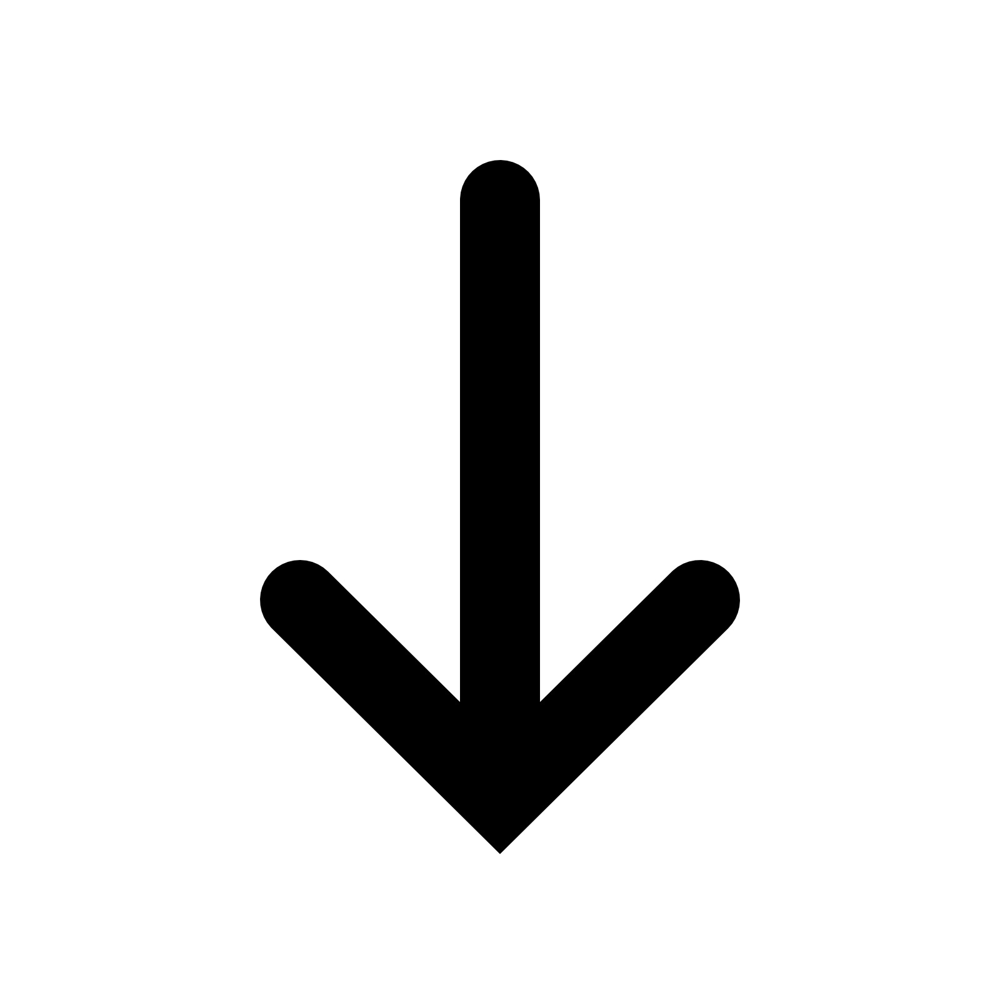

Click below to see my work
Project - 1 : TinDog Website
Project - 2 : Move It website
Project - 3 : BMI Calculator
Project - 4 : Grade Calculator
Project - 5 : Text to Speech Convertor
Project - 6 : Analog Clock
Project - 7 : Login And Registration Form
Project - 8 : Sliding Navigation Bar
Project - 9 : Task Tracker
Project - 10 : Parallax Effect
Project - 11 : Tip Calculator
Project - 12 : Pay Role Management
Project - 13 : Detect Network Speed
Project - 10 : AI Image Generator